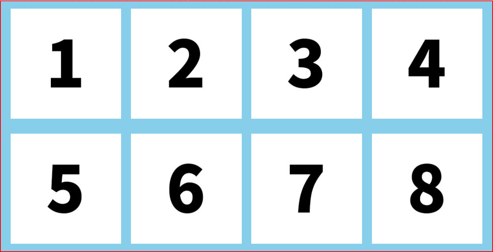
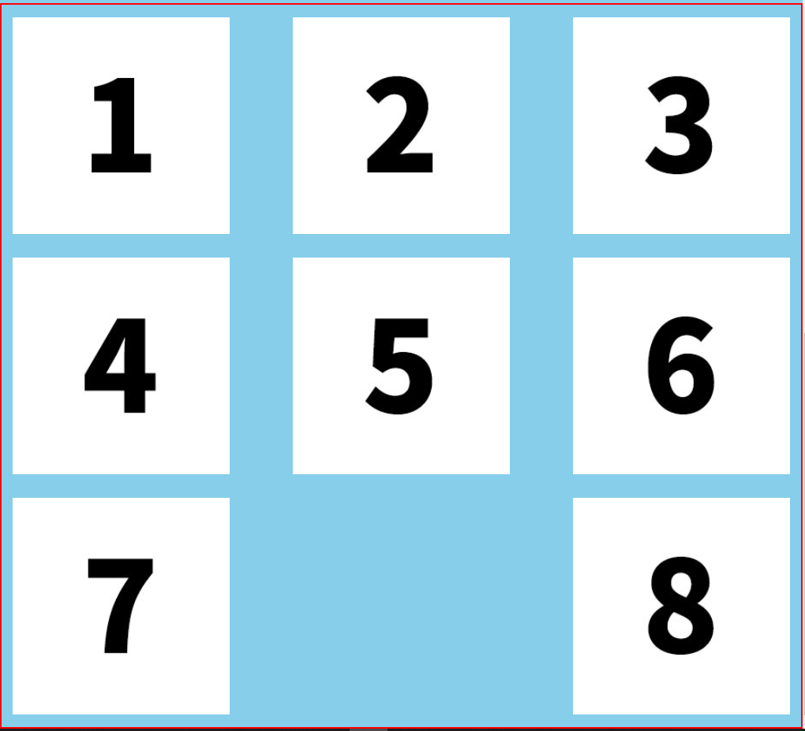
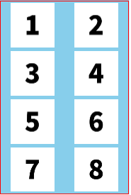

目前的螢幕寬度為:px
在1000px 以上
時要呈現【如右圖】
【左右間距等分】

在1000px 以下
時要呈現【如右圖】
【左右貼齊】

在768px 以下
時要呈現【如右圖】
【中間的間距是左右的2倍】

【題目一 - 根據上述需求完成】
【CSS撰寫請在 - answer01 撰寫】
小提示 : 1. 父元素需要給【padding】推出上下，不是左右唷~~~
2. 每個圖片的寬需要給【幾%】
在768px 以上
時要呈現【如下圖】】
在768px 以下
時要呈現【如右圖】
【題目二 - 做出一個導覽列】
【CSS撰寫請在 - answer02 撰寫】
小提示 : 1. 右邊連結需要給它一些寬度【幾%】
2. 每個連結區塊需要用margin推開